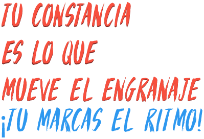

<ion-content>

  <div id="containerOrganoConcedente">


    <div id="topContainerOrganoConcedente">

      <div id="topTextOrganoConcedente">
        <p><strong>El órgano concedente:</strong></p>
        <br>
        Es la Junta Directiva quien resuelve las solicitudes de ayuda y no el personal técnico de la Asociación Campo de Calatrava.
        <br>
        <br> La solicitud que va a hacer debe estar adecuadamente presentada y dar lugar al correspondiente expediente que debe tramitarse sin defectos de forma.
      </div>

      <div id="firstPicOrganoConcBox">
        
      </div>

      <div id="secondPicOrganoConcBox">
        
      </div>

    </div>


    <div id="footerButtonsBox">

      <div id=backButtonBox>
        <button id="buttonBack" ion-button block>VOLVER</button>
      </div>

      <div id=continueButtonBox>
        <button id="buttonContinue" ion-button block>CONTINUAR</button>
      </div>

    </div>


  </div>

</ion-content>
